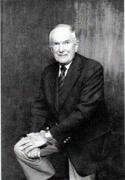

The William C. Carter Award is presented annually at the DSN Conference to recognize an individual who has made a significant contribution to the field of dependable computing through his or her graduate dissertation research.
The IEEE TC on Dependable Computing and Fault Tolerance (TCFT) and IFIP Working Group 10.4 on Dependable Computing and Fault Tolerance (WG 10.4) jointly sponsor the William C. Carter PhD Dissertation Award in Dependability. Instituted in 1997 as the William C. Carter Award, it was reformulated in 2016, where the present name and eligibility requirements aim at recognizing an individual who has made a significant contribution to the field of dependable and secure computing throughout his or her PhD dissertation.
The award commemorates the late William C. Carter, a key figure in the formation and development of the field of dependable computing. Bill Carter always took the time to encourage, mentor, and inspire newcomers to this field and this award honors and sustains this aspect of his legacy.
The award recipient receives a $750 US cash award as a contribution to travel expenses and a waived registration fee to attend the edition of the IEEE/IFIP International Conference on Dependable Systems and Networks (DSN) at which the award is presented. The recipient will be required to attend DSN to receive the award and is invited to give a short presentation to DSN attendees.
To be eligible for the award, the nominee's PhD defense must be completed prior to the nomination deadline and must have occurred no more than 16 months prior to the nomination deadline. Previous recipients of the (old or renamed) Carter Award are not eligible.
Pritam Dash, University of British Columbia (UBC), Canada
PhD Dissertation title: “Software Solutions for Mitigating Physical Attacks against Robotic Autonomous Vehicles”
Defense date: November 2025
Thesis Advisor: Prof. Karthik Pattabiraman (UBC)
Excerpt from the report of the selection committee: Dr. Dash's doctoral dissertation addresses the critical challenge of protecting robotic autonomous vehicles (RAVs), such as drones and rovers, against physical sensor attacks, including GPS spoofing and IMU manipulation, which evade traditional software-based defenses. It clearly demonstrates this important problem in autonomous systems security and develops new solutions that recover RAVs from both attacks and faults, identify and isolate the sensors under attack to mitigate attack impact, and navigate the RAV under attacks while simultaneously satisfying safety constraints and mission objectives, e.g., timeliness. The thesis combines control theory, attack detection, resilient autonomy, and reinforcement learning techniques, particularly integrating ML with control to enable automated attack recovery for RAVs. The thesis also develops new open-source tools and experimental techniques that enable realistic attack simulation on RAVs. It performs rigorous control-theoretic modeling, state estimation, software-based simulation, and real-world experiments across multiple platforms and attack scenarios, with comprehensive evaluation metrics and new software-based methods ensuring reproducibility. The thesis work has already had a profound impact both in academia and industry, with thesis results published at major venues including DSN (twice, including a best paper award), CCS, AsiaCCS, TDSC.
Pascal Felber, University of Neuchâtel, Switzerland
Complete information on the award can be found on the award web page: http://www.dependability.org/carter-award.html